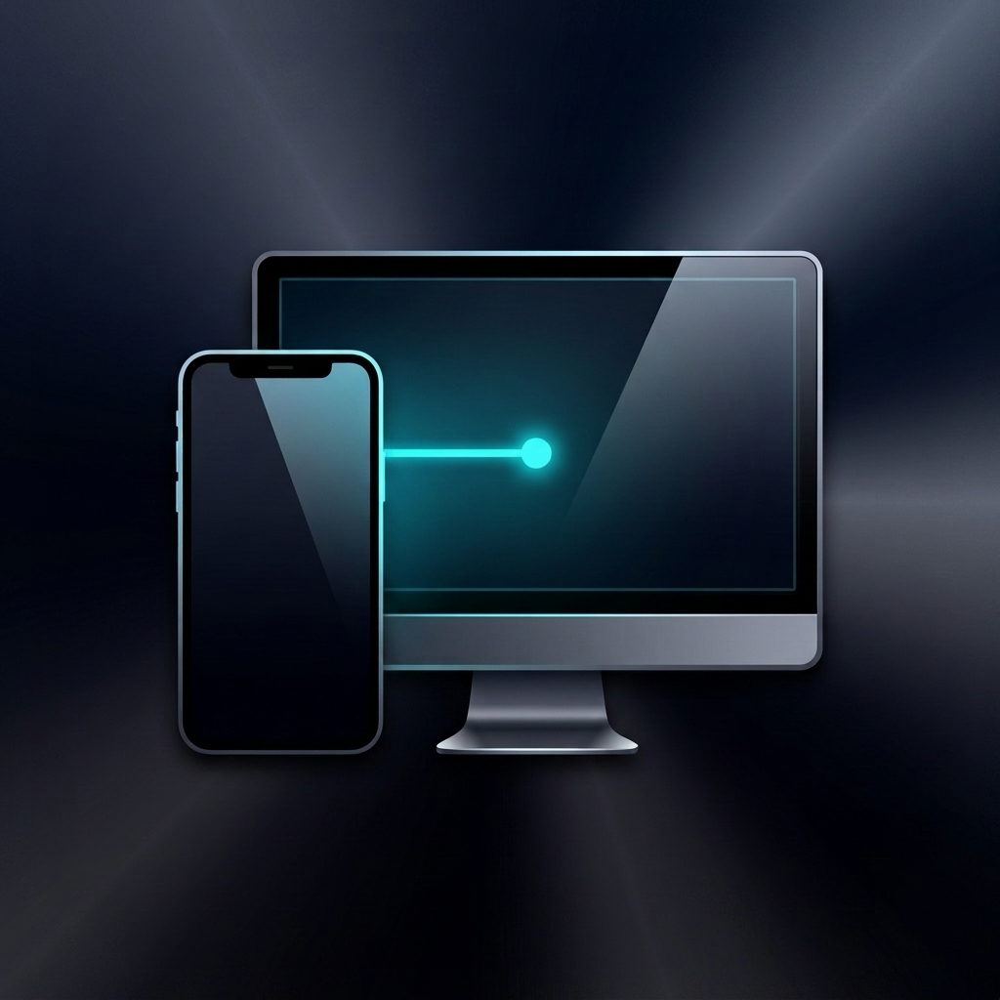
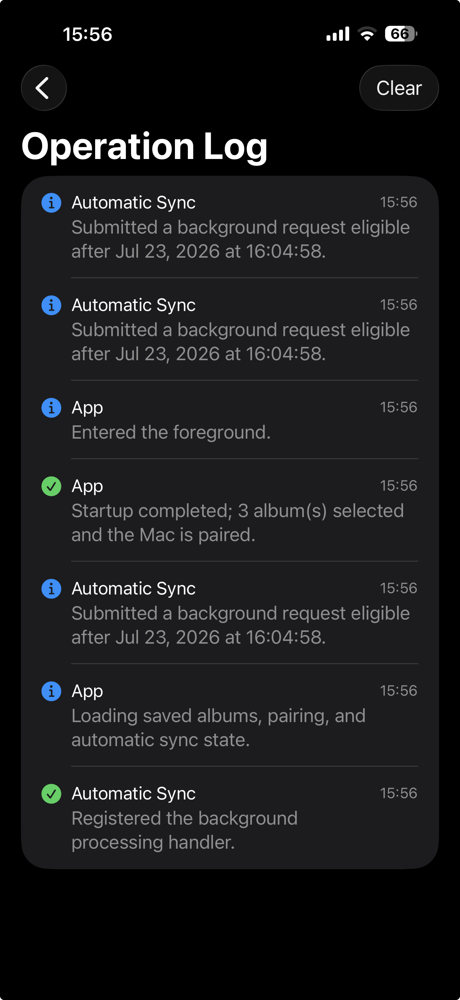
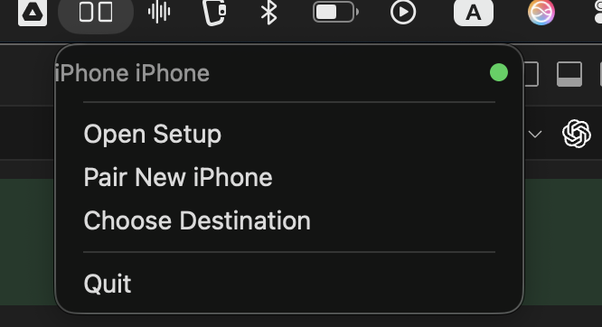

Original media
Transfers the selected original resources, including Live Photo components and supported adjustments.

iOS 18+ · macOS 14+
Back up selected Photo Library albums directly to a paired receiver on the same local network—without a developer cloud, relay, or account.


Transfers the selected original resources, including Live Photo components and supported adjustments.
Bonjour discovery, explicit pairing, and TLS protect transfer between devices you control.
Delete After Sync is optional, default-off, and limited to assets confirmed by the receiver.